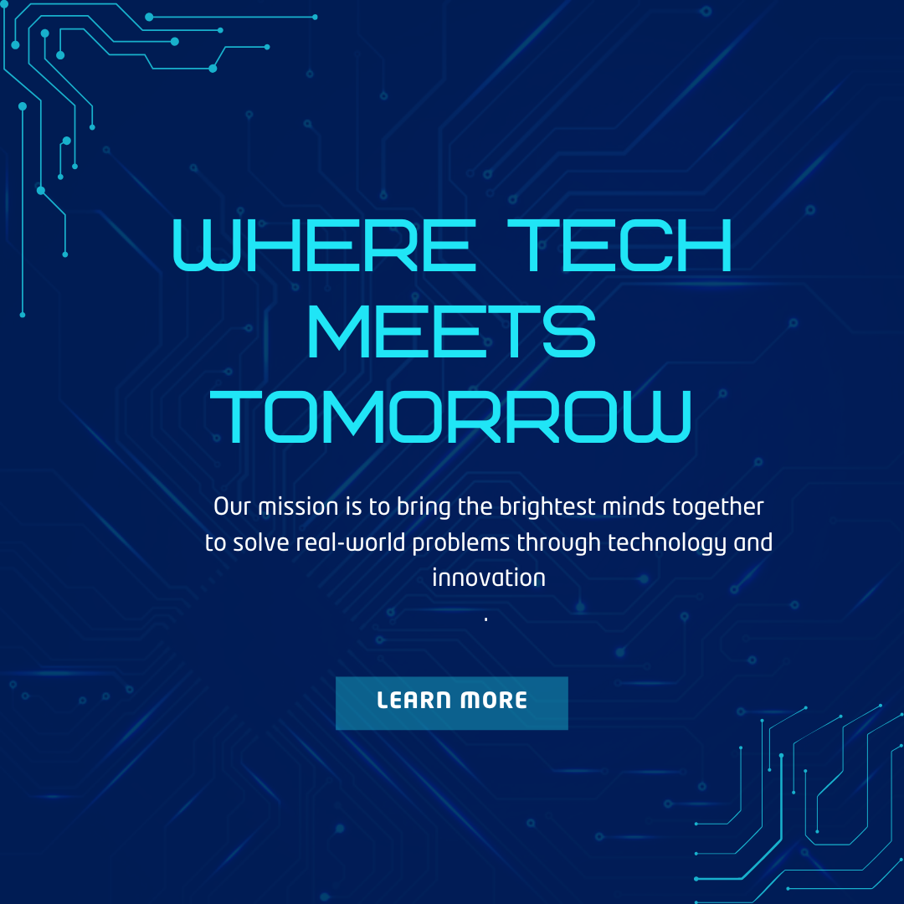

History
TechCon began in 2010 as a grassroots gathering for developers and has since grown into a globally recognized tech summit.
TechCon began in 2010 as a grassroots gathering for developers and has since grown into a globally recognized tech summit.
Our mission is to bring the brightest minds together to solve real-world problems through technology and innovation.
Over the years, TechCon has hosted some of the most influential figures in technology.